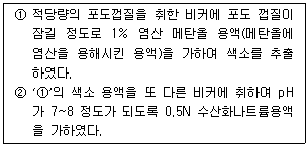
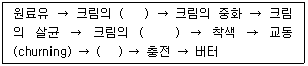

식품산업기사 (2014-03-02 기출문제)
1과목: 식품위생학
1. 다음 식품과 독성 물질의 연결이 올바른 것은?
- 청매 - ricin
- 버어마콩 - phaseolunatin
- 피마자유 – gossypol
- 면실유 - amygdalin
(정답률: 59%)

2. 경구감염병의 특징이라고 할 수 없는 것은?
- 소량을 섭취하여도 발병한다.
- 지역적인 특성이 인정된다.
- 환자 발생과 계절과의 관계가 인정된다.
- 잠복기가 짧다.
(정답률: 81%)
3. 화학적 합성품을 식품첨가물로 사용하고자 직부심사를 할 때 가장 중점을 두는 것은?
- 효능
- 순도
- 영양가
- 안전성
(정답률: 92%)
4. 다음 식중독을 일으키는 세균 중 잠복기가 가장 짧은 균주는?
- Salmonella enteritidis
- Staphylococcus aureus
- Escherichia coli O-157
- Clostridium botulinum
(정답률: 64%)
5. 일반적으로 식품의 초기부패 단계에서의 1g당 세균수는 어느 정도인가?
- 1 ~ 10
- 102 ~ 103
- 104 ~ 105
- 107 ~ 108
(정답률: 84%)
6. Cl. botulinum에 의해 생성되는 독소의 특성과 가장 거리가 먼 것은?
- 단순단백질
- 강한 열저항성
- 수용성
- 신경독소
(정답률: 70%)
7. 식품 취급 장소에서 주의해야 할 사항 중 적당한 것은?
- 소독제, 살충제 등은 편리하게 사용하기 위해 식품 취급 장소와 함께 보관한다.
- 식품 취급기구는 매달 1번식 온탕과 세재로 닦고 살균, 소독한다.
- 조리장, 식당, 식품 저장창고의 출입문은 매일 개방하여 둔다.
- 작업장의 실내, 바닥, 작업선반은 매일 1회씩 청소한다.
(정답률: 82%)
8. 작물의 재배 수확 후 27℃, 습도 82%, 기질의 수분함량 15% 정도로 보관하였더니 곰팡이가 발생 되었다. 의심되는 곰팡이 속과 발생 가능한 독소를 바르게 나열한 것은?
- Fusarium, Patulin
- Penicillium, T-2 toxin
- Aspergillus, Zeralenone
- Aspergillus, aflatoxin
(정답률: 88%)
9. 오크라톡신(ochratoxin)은 무엇에 의해 생성되는 독소인가?
- 진균(곰팡이)
- 세균
- 바이러스
- 복어의 일종
(정답률: 78%)
10. 노로바이라스 식중독에 대한 설명으로 틀린 것은?
- 일 년 중 주로 기온이 낮은 겨울철에 발생건수가 증가하는 경향이 있다.
- 항바이러스 백신이 개발되어 예방이 가능하다.
- 환자와의 직접접촉이나 공기를 통해서 감염될 수 있다.
- 어패류 등은 86℃에서 1분 이상 가열하여 섭취한다.
(정답률: 84%)
11. 가장 낮은 수분활성도를 갖는 식품에서 생육할 수 있는 세균은?
- Listeria monocytogenes
- Camphylobacter jejuni
- E. coli
- Staphylococcus aureus
(정답률: 50%)
12. 장염 비브리오균에 의한 식중독에 의해 가장 일어나기 쉬운 식품은?
- 육류
- 우유제품
- 채소류
- 어패류
(정답률: 93%)
13. 단백질의 부패산물로 볼 수 있는 알레르기성 식중독의 원인 물질이 아닌 것은?
- 히스타민(histamine)
- 프토마인(ptomaine)
- 부패아민류
- 아우라민(auramine)
(정답률: 55%)
14. 자연계의 환경오염 물질이 인체에 이행되는 과정을 올게 표현한 것은?
- 광합성
- 천이현상
- 먹이연쇄
- 약육강식
(정답률: 79%)
15. 다음 기생충과 그 감염 원인이 되는 식품의 연결이 잘못된 것은?
- 쇠고기 - 무구조충
- 오징어, 가다랭이 - 광절열두조충
- 가재, 게 - 폐흡충
- 돼지고기 - 유구조충
(정답률: 87%)
16. 방사능 오염에 대한 설명이 잘못된 것은?
- 핵분열 생성물의 일부가 직접 또는 간접적으로 농작물에 이행될 수 있다.
- 생성율이 비교적 크고, 반감기가 긴 90Sr과 137Cs 이 식품에서 문제가 된다.
- 방사능 오염 물질이 농작물에 축적되는 비율은 지역별 생육 토양의 성질에 영향을 받지 않는다.
- 131I는 반감기가 짧으나 비교적 양이 많아서 문제가 된다.
(정답률: 86%)
17. 인축공통감염병이 아닌 것은?
- 파상열(Brucellosis)
- 탄저(Anthrax)
- 야토병(Tularemia)
- 콜레라(Cholera)
(정답률: 80%)
18. 반수치사량 이라고도 하며, 실험동물의 50%를 사망시키는 독성물질의 양을 나타내는 것은?
- ADI
- MPL
- LD50
- MPI
(정답률: 88%)
19. 식품업소에 서식하는 바퀴와 관계가 없는 것은?
- 오물을 섭취, 식품, 식기에 병원체를 옮긴다.
- 부엌 주변, 습한 곳, 어두운 구석을 깨끗이 청소해야 한다.
- 붕산가루를 넣은 먹이, DDVP나 pyrethrine 훈증 등으로 살충 효과가 있다.
- 곰팡이류를 먹고, 촉각은 주걱형이다.
(정답률: 85%)
20. 식품의 변패검사법 중 화학적 검사법이 아닌 것은?
- 휘발성 아민의 측정
- 어육의 단백질 침전반응 검사
- 과산화물가, 카르보닐가의 측정
- 경도 측정
(정답률: 87%)
2과목: 식품화학
21. 다음 중 식품의 수분정량법이 아닌 것은?
- 건조감량법
- 증류법
- Karl Fischer법
- 자외선 사용법
(정답률: 81%)
22. 식품의 조지방 정량법은?
- Soxhlet 법
- Kjeldahl 법
- Van Slyke 법
- Bertrand 법
(정답률: 73%)
23. 단백질 중 tyrosine, phenylalanine, tryptophan 등의 아미노산에 기인하여 일어나는 정색반응은?
- Biuret 반응
- Xanthoprotein 반응
- Millon 반응
- Ninhydrin 반응
(정답률: 44%)
24. 화학구조적으로 경화공정을 통해서 트랜스지방이 만들어질 수 없는 것은?
- stearic acid
- linolenic acid
- linoleic acid
- arachidonic acid
(정답률: 58%)
25. 다음 중 프로비타민 A가 아닌 것은?
- cryptoxanthin
- β-carotene
- α-carotene
- lycopene
(정답률: 60%)
26. 식품을 데치기(blanching)하는 목적은?
- 식품 세척
- 해충 예방
- 식품 건조 방지
- 식품 중 효소 불활성화
(정답률: 78%)
27. 다음 중 산패를 가장 잘 일으키는 유지는?
- 버터
- 올리브유
- 정어리유
- 참기름
(정답률: 75%)
28. 다음 관능검사 중 가장 주관적인 검사는?
- 차이 검사
- 묘사 검사
- 기호도 검사
- 삼점 검사
(정답률: 89%)
29. 관능적 특성의 측정 요소들 중 반응척도가 갖추어야 할 요건이 아닌 것은?
- 단순해야 한다.
- 편파적이지 않고, 공평해야 한다.
- 관련성이 있어야 한다.
- 차이를 감지할 수 없어야 한다.
(정답률: 91%)
30. 전분입자의 호화현상을 설명한 것으로 틀린 것은?
- 생전분에 물을 넣고 가열하였을 때 소화되기 쉬운 α전분으로 되는 현상이다.
- 호화에 필요한 최저온도는 일반적으로 60℃ 전후이다.
- 알칼리성 pH에서는 전분입자의 호화가 촉진된다.
- 일반적으로 쌀과 같은 곡류 전분입자가 감자, 고구마등 서류 전분입자에 비해 호화가 쉽게 일어난다.
(정답률: 72%)
31. 아래의 ①과 ②의 반응에서 나타나는 색은?

- ① : 적색, ② : 적색
- ① : 적색, ② : 청색
- ① : 청색, ② : 청색
- ① : 청색, ② : 적색
(정답률: 81%)
32. 비타민 중 항산화제로 작용하는 것은?
- 비타민 D
- 비타민 B1
- 비타민 E
- 비타민 B2
(정답률: 76%)
33. 교질의 성질이 아닌 것은?
- 반투성
- 브라운 운동
- 흡착성
- 경점성
(정답률: 57%)
34. 다음 당류 중 β형의 것이 단맛이 강한 것은?
- 과당
- 맥아당
- 설탕
- 포도당
(정답률: 76%)
35. 액체 속 기체가 분산된 콜로이드 식품은?
- 마요네즈
- 맥주
- 우유
- 젤리
(정답률: 86%)
36. 전분의 노화현상에 관한 설명으로 옳은 것은?
- β화된 전분을 실온에 두었을 때 α화 전분으로 변하는 현상
- α화된 전분을 실온에 두었을 때 β화 되는 현상
- 전분을 실온에 두었을 때 α전분은 β화 되고, β전분은 α전분이 되는 현상
- 전분이 미생물 혹은 효소에 의해 변질된 현상
(정답률: 74%)
37. 효소와 그 작용기질의 짝이 잘못된 것은?
- α-amylase : 전분
- β-amylase : 섬유소
- trypsin : 단백질
- lipase : 지방
(정답률: 80%)
38. 지방산에 대한 설명 중 틀린 것은?
- 분자 내에 이중결합을 갖고 있는 지방산을 불포화 지방산이라 한다.
- 저급지방산은 비휘발성이고, 고급지방산은 휘발성이다.
- 포화지방산은 탄소수가 증가함에 따라서 녹는점이 높아진다.
- 불포화지방산의 이중결합은 대부분 cis 형을 취하고 있다.
(정답률: 67%)
39. 독성이 강하여 면실유 정제 시에 반드시 제거하여야 되는 천연항산화제는?
- sesamol
- guar gum
- gossypol
- gallic acid
(정답률: 89%)
40. 효소적 갈변반응이 일어나기 위해 반드시 필요한 요소가 아닌 것은?
- 효소
- 기질
- 열
- 산소
(정답률: 53%)
3과목: 식품가공학
41. 버터 제조공정 중 ( ) 안에 들어갈 공정이 순서대로 나열된 것은?

- 분리, 발효, 연압
- 분리, 연압, 발효
- 발효, 연압, 살균
- 발효, 분리, 연압
(정답률: 65%)
42. 다음 중 통조림 관의 재료로 이용되지 않는 것은?(오류 신고가 접수된 문제입니다. 반드시 정답과 해설을 확인하시기 바랍니다.)
- 함석관
- 양철관
- 알루미늄관
- 무도석강판관
(정답률: 40%)
43. 제빵공정에서 처음에 밀가루를 체로 치는 가장 큰 이유는?
- 불순물을 제거하기 위하여
- 해충을 제거하기 위하여
- 산소를 풍부하게 함유시키기 위하여
- 산소를 제거하기 위하여
(정답률: 80%)
44. 식품의 조리 및 가공에서 튀김용으로 쓰이는 기름의 발연점 특성으로 적합한 것은?
- 높은 것이 좋다.
- 낮은 것이 좋다.
- 낮은 것이 좋으나 너무 낮은 것은 나쁘다.
- 상관없다.
(정답률: 83%)
45. 과실은 익어가면서 녹색이 적색 또는 황색 등으로 색깔이 변하며 조직도 연하게 된다. 익은 과실의 조직이 연해지는 이유는?
- 전분질이 가수분해되기 때문
- 펙틴(Pectin)질이 분해되기 때문
- 색깔이 변하기 때문
- 단백질이 가수분해되기 때문
(정답률: 89%)
46. 청국장 제조시 발효에 이용되는 미생물은?
- Apergillus oryzae
- Bacillus natto
- Lactobacillus lactic
- Saccharomyces cerevisiae
(정답률: 84%)
47. 일반적인 밀가루 품질시험 방법과 거리가 먼 것은?
- amylose 작용력 시험
- 면의 신장도 시험
- gluten 함량 측정
- protease 작용력 시험
(정답률: 73%)
48. 무당연유 제조에 대한 설명이 잘못된 것은?
- 원료유에 대한 검사를 하여야 한다.
- 당을 첨가하지 않는다.
- 원료유를 균질화한다.
- 가열, 멸균하지 않는다.
(정답률: 82%)
49. 아미노산 간장의 제조에서 탈지대두박 등의 단백질 원료를 가수분해하는데 주로 사용되는 산은?
- 황산
- 수산
- 염산
- 질산
(정답률: 59%)
50. 간장코지 제조 중 시간이 지남에 따라 역가가 가장 높아지는 효소는?
- α-amylase
- β-amylase
- protease
- lipase
(정답률: 66%)
51. 잼 제조 시 젤리점(jelly point)을 결정할 때 여러 가지 방법을 조합하여 결정한다. 다음 중 젤리점을 결정하는 방법이 아닌 것은?
- 스푼 테스트
- 컵 테스트
- 당도계에 의한 당도 측정
- 알칼리 처리법
(정답률: 80%)
52. 두부의 제조 시 필수적인 공정에 해당되지 않는 것은?
- 압착
- 마쇄
- 여과
- 응고
(정답률: 56%)
53. 경화유를 만드는 목적이 아닌 것은?
- 수소를 첨가하여 산화안전성을 높인다.
- 색깔을 개선한다.
- 물리적 성질을 개선한다.
- 포화지방산을 불포화지방산으로 만든다.
(정답률: 56%)
54. 백미의 도감율은 얼마인가?
- 97%
- 92%
- 8%
- 3%
(정답률: 52%)
55. 유체의 층류(laminar flow)에 대한 설명으로 옳은 것은?
- 속도가 커지면서 소용돌이가 생긴다.
- 측면 혼합이 일어난다.
- 층들이 서로 미끄러지듯이 흐른다.
- 흐름이 수직방향으로만 일어난다.
(정답률: 67%)
56. 100℃를 화씨온도로 나타내면?
- 212℉
- 87.6℉
- 32℉
- 373.15℉
(정답률: 75%)
57. 과실주스 제조에 있어서의 청징방법과 거리가 먼 것은?
- 난백을 사용하는 방법
- 구연산을 사용하는 방법
- pectinase를 사용하는 방법
- casein을 사용하는 방법
(정답률: 47%)
58. 우유의 가공 공정에서 균질화의 목적이 아닌 것은?
- 미생물의 증식억제
- 지방의 분리방지
- 커드(curd)의 연화
- 지방구의 미새화
(정답률: 64%)
59. 밀가루를 반죽할 때 발생하는 점탄성을 측정하는 검사방법은?
- Swelling power
- Farinograph
- Extensograph
- Amylograph
(정답률: 62%)
60. 햄이나 베이컨을 만들 때 염지액 처리 시 첨가되는 질산염과 아질산염의 기능으로 가장 적합한 것은?
- 수율 증진
- 멸균작용
- 독특한 향기의 생성
- 고기색의 고정
(정답률: 85%)
4과목: 식품미생물학
61. 효모에 의한 알코올 발효 시 포도당 100g으로부터 얻을 수 있는 최대 에틸알코올의 양은 약 얼마인가?
- 25g
- 50g
- 77g
- 100g
(정답률: 39%)
62. 우유 중의 세균 오염도를 간접적으로 측정하는데 주로 사용하는 생균수가 많을수록 탈수소능력이 강해지는 성질을 이용하는 것은?
- 산도시험
- 알코올침전 시험
- 포스포타아제 시험
- 메틸렌블루(methylene blue) 환원 시험
(정답률: 65%)
63. 미생물과 이들이 생산하는 물질의 연결이 잘못된 것은?
- Penicillium chrysogenum - lysine
- Aspergillus niger - citric acid
- Corynebacterium glutamicum - glutamic acid
- Clostridium acetobutylicum -acetone
(정답률: 50%)
64. 신선어나 보존어로부터 가장 많이 분리되는 균종은?
- Achromobacter 속
- Lactobacillus 속
- Micrococcus 속
- Brevibacterium 속
(정답률: 41%)
65. 스위스치즈의 치즈눈 생성에 관여하는 미생물은?
- Propionibacterium shermanii
- Lactobacillus bulgaricus
- Penicillium requeforti
- Streptococcus thermophilus
(정답률: 61%)
66. 효모에 의한 발효성 당류가 아닌 것은?
- 과당
- 전분
- 설탕
- 포도당
(정답률: 68%)
67. 미생물세포에서 이부와의 물질이동이나 투과에 중요한 역할을 행하는 장소는?
- 원형질막(cytoplasmic membrane)
- 핵막(nucleus membrane)
- 세포벽(cell wall)
- 액포(vacuole)
(정답률: 52%)
68. 중온균의 발육 최적 온도는?
- 0 ~ 10℃
- 10 ~ 25℃
- 25 ~ 37℃
- 50 ~ 55℃
(정답률: 73%)
69. 젖산균에 대한 설명 중 틀린 것은?
- 요구르트 제조에는 이형발효(heterofermentative)의 젖산균만 사용하여 초산 발생을 억제시킨다.
- 대부분이 catalase 음성이다.
- 김치, 침채류의 발효에 관여한다.
- 장 내에서 유해균의 증식을 억제한다.
(정답률: 61%)
70. Penicillium roqueforti 와 가장 관계 깊은 것은?
- 치즈
- 버터
- 유산균 음료
- 절임류
(정답률: 80%)
71. 푸른곰팡이(Penicillium)가 무성적으로 형성하는 포자를 무엇이라 하는가?
- 분생(포)자
- 포자낭포자
- 유주자
- 접합포자
(정답률: 55%)
72. 약주제조에서 술밑(酒母)을 사용하는 목적은?
- 효모균 번식
- 주정 생산
- 젖산 생성
- 잡균 생성
(정답률: 54%)
73. 맥주를 발효하기 위한 맥아즙 제조의 주목적으로 가장 알맞은 것은?
- 효모의 증식
- 효소의 생산
- 발효
- 당화
(정답률: 69%)
74. 글루탐산(glutamic acid)을 생산하는 경우 생육인자로 요구되는 성분은?
- 비오틴(biotin)
- 티아민(thiamine)
- 페니실린(penicillin)
- 올레산(oleic acid)
(정답률: 65%)
75. 박테리오파지(Bacteriophage)가 문제시 되지 않는 발효는?
- 젖산균 요구르트 발효
- 항생물질 발효
- 맥주 발효
- glutamic acid 발효
(정답률: 59%)
76. 고정 염색의 일반적인 순서는?
- 건조→염색→수세→건조→고정→도말→검경
- 도말→고정→건조→수세→염색→건조→검경
- 건조→도말→염색→고정→수세→건조→검경
- 도말→건조→고정→염색→수세→건조→검경
(정답률: 56%)
77. 포도주 제조공정에서 오염을 방지하기 위해 첨가하는 물질은?
- 아황산
- 소금
- 호프
- 젖산
(정답률: 76%)
78. 통기성의 필름으로 포장된 냉장 포장육의 부패에 관여하지 않는 세균은?
- Pseudomonas 속
- Clostridium 속
- Moraxella 속
- Acinetobacter 속
(정답률: 62%)
79. 고정화 효소를 공업에 이용하는 목적이 아닌 것은?
- 효소를 오랜 시간 재사용할 수 있다.
- 연속반응이 가능하여 안정성이 크며 효소의 손실도 막을 수 있다.
- 기질의 용해도가 높아 장기간 사용이 가능하다.
- 반응 생성물의 정제가 쉽다.
(정답률: 53%)
80. 정상발효(homofermentative) 젖산균의 당류 발효에 대한 설명으로 옳은 것은?
- 젖산과 초산 생성 통성혐기성이다.
- 젖산 및 알코올 생성 통성혐기성균이다.
- 젖산 이외에 수소생성 통성혐기성균이다.
- 젖산만 생성하는 통성혐기성균이다.
(정답률: 66%)
5과목: 식품제조공정
81. 겨울철 해변가나 고산지대에서 주간의 온도 변화에 의하여 얼었다, 녹았다를 반복하면서 수분을 증발시켜 건조하는 방법은?
- 양건 건조법
- 음건 건조법
- 자연 동건법
- 진공 건조법
(정답률: 85%)
82. 다음 중 국내 통조림 가공공장에서 많이 이용하고 있는 정치식 수평형 레토르트의 부속 기기가 아닌 것은?
- 브리더(bleeder)
- 벤트(vent)
- 척(chuck)
- 안전밸브
(정답률: 60%)
83. 식품의 분쇄기 선정 시 고려할 사항이 아닌 것은?
- 원료의 경도와 마모성
- 원료의 미생물학적 안전성
- 원료의 열에 대한 안정성
- 원료의 구조
(정답률: 62%)
84. 증이 압축식 냉동기의 4대 요소가 아닌 것은?
- 증발기
- 압축기
- 응축기
- 흡입기
(정답률: 59%)
85. 식품의 살균온도를 결정하는 가장 중요한 인자는?
- 식품의 비타민 함량
- 식품의 pH
- 식품의 당도
- 식품의 수분함량
(정답률: 60%)
86. 초음파 세척에 대한 설명으로 틀린 것은?
- 빠른 시간에 세척할 수 있다.
- 더러운 달걀의 세척이나 채소 속의 모래 세척 등에 이용된다.
- 교반에너지로 초음파를 사용한다.
- 분무기의 노즐을 통하여 높은 압력의 물을 분무한다.
(정답률: 74%)
87. 즉석면류의 제조공정 중 냉각은 기름에 튀긴 면을 차가운 바람으로 강제 냉각시키는데 이러한 냉각과정의 목적과 가장 거리가 먼 것은?(오류 신고가 접수된 문제입니다. 반드시 정답과 해설을 확인하시기 바랍니다.)
- 기름의 내부 침투를 적게 하기 위해서
- 튀긴 기름의 품질저하를 방지하기 위해서
- 포장 후에 포장 내부에 이슬이 맺히는 것을 방지하기 위해서
- 첨부된 조미료가 변질되는 것을 방지하기 위해서
(정답률: 30%)
88. 수직 스크루 혼합기의 용도로 가장 적합한 것은?
- 정도가 매우 높은 물체를 골고루 섞어준다.
- 서로 섞이지 않는 두 액체를 균일하게 분산시킨다.
- 고체 분말과 소량의 액체를 혼합하여 반죽 상태로 만든다.
- 많은 양의 고체에 소량의 다른 고체를 효과적으로 혼합시킨다.
(정답률: 58%)
89. 다음 미생물 중 121.1℃에서 D값이 가장 큰 것은?
- Clostridium botulinum
- Clostridium sporogenes
- Bacillus subtilis
- Bacillus stearothermophilus
(정답률: 47%)
90. 식품 원료를 광학 선별기로 분리할 때 사용되는 물리적 성질은?
- 무게
- 색깔
- 크기
- 모양
(정답률: 69%)
91. 우유나 과즙의 맛과 비타민 등 영양성분을 보존하기 위하여 70 ~ 75℃에서 10 ~ 20초간 살균하는 방법은?
- 저온 살균법
- 고온순간 살균법
- 초고온 살균법
- 간헐 살균법
(정답률: 76%)
92. 다음 중 초미분쇄기는?
- 해머 밀(hammer mill)
- 롤 분쇄기(roll crusher)
- 콜로이드 밀(colloid mill)
- 볼 밀(ball mill)
(정답률: 70%)
93. 유체가 한 방향으로만 흐르도록 한 역류방지용 밸브는?
- 정지밸브
- 슬루스 밸브
- 체크밸브
- 안전 밸브
(정답률: 68%)
94. 원심분리기의 회전속도를 2배로 늘리면 원심력은 몇 배로 증가하는가?
- 1배
- 2배
- 4배
- 8배
(정답률: 68%)
95. 치즈를 만들고 난 유청에서 유청단백질을 농축하고자 할 때 적합한 막분리 공정은?(오류 신고가 접수된 문제입니다. 반드시 정답과 해설을 확인하시기 바랍니다.)
- 한외 여과
- 나노 여과
- 마이크로 여과
- 역삼투
(정답률: 44%)
96. 수산식품가공에서 표면경화 (skin effect) 현상을 방지하기 위한 적합한 방법은?
- 야간 퇴적
- 표면증발속도를 내부확산속도보다 빠르게 조절
- 초기에 고온 열풍 건조
- 내부 확산 억제
(정답률: 52%)
97. 커피에서 카페인을 제거하는데 사용되는 용매와 거리가 먼 것은?
- 물
- methyl chloride
- 초임계 이산화탄소
- ethyl alcohol
(정답률: 49%)
98. 24%(습량기준)의 수분을 함유하는 곡물 20ton을 14%(습량기준)까지 건조하기 위해서 제거해야 하는 수분량은 얼마인가?
- 2325 kg
- 4650 kg
- 6975 kg
- 9300 kg
(정답률: 49%)
99. 액체와 액체를 분리할 때 사용하며, 가늘고 긴 원통 모양의 보울(bowl)이 축에 매달려 빠른 속도로 회전하는 구조를 가진 원심 분리기는?
- 관형 원심분리기
- 원판형 원심분리기
- 디캔터형 원심분리기
- 노즐 배출형 원심분리기
(정답률: 66%)
100. 식품재료를 물속에서 세척한 후 부력 차이를 이용하여 이물질을 분리해내는 세척 방법은?
- 담금세척
- 분무세척
- 부유세척
- 여과세척
(정답률: 80%)